真实模型 · 待造型验收B2 蛋挞鸭、钢杯鸭、积木鸭
三款使用同一鸭子母模的头、嘴、眼睛、颈部与小脚，通过骨架安排探颈姿态。原先大头、小短颈的三款已被替换为本批候选；旧版作为历史问题证据保留。
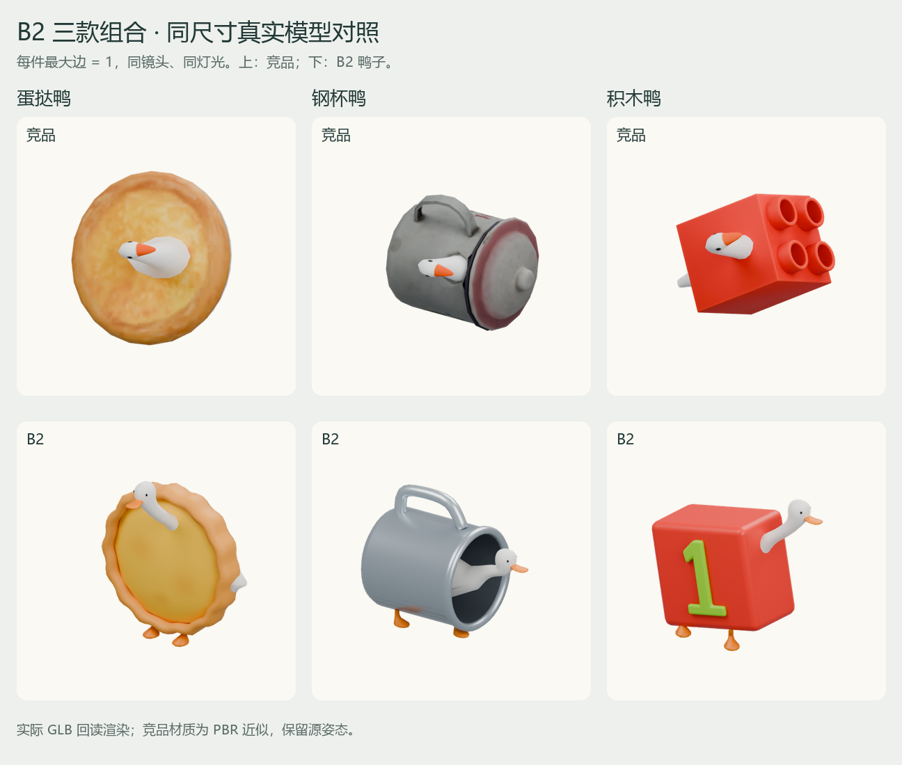
每个对象最长边统一为 1、包围盒居中，采用相同正交镜头、灯光和画布。竞品保留提取时姿态，显示的是基础色/PBR 近似，不是原游戏画面。没有按每张图轮廓单独放大。
蛋挞鸭
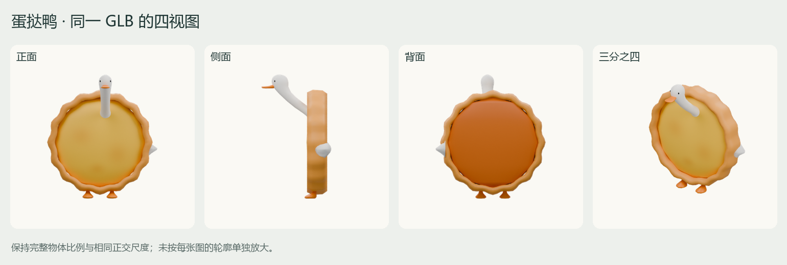
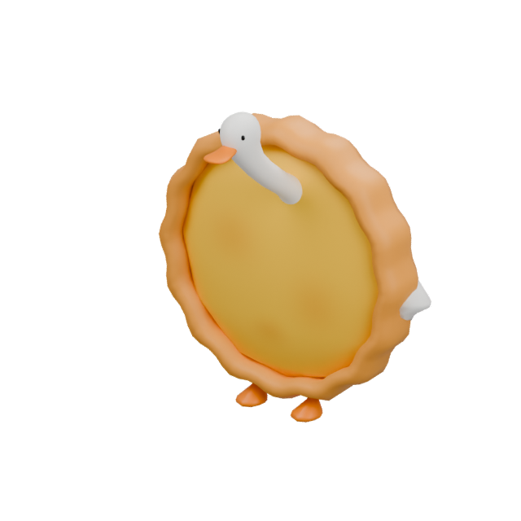
真实移动端 GLB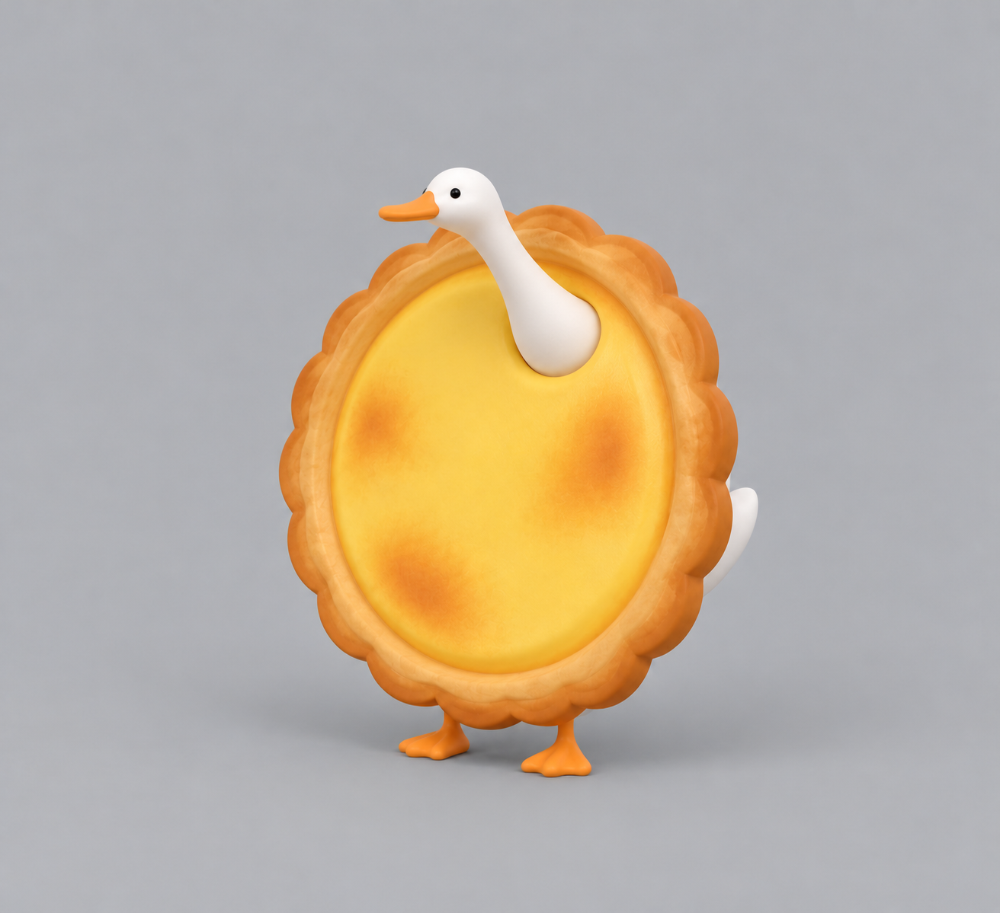
已确认的 B2 融合生图方向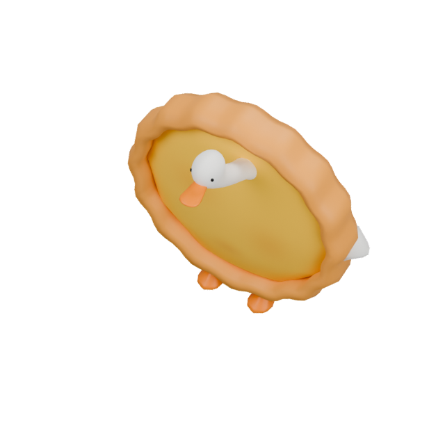
游戏俯视检查GLB · FBX · 可编辑 Blender · 贴图映射
钢杯鸭
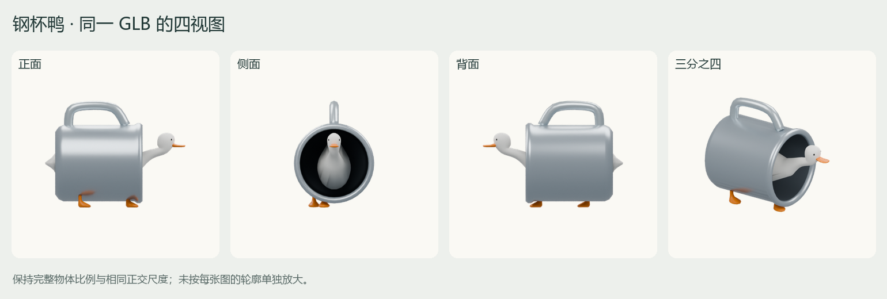
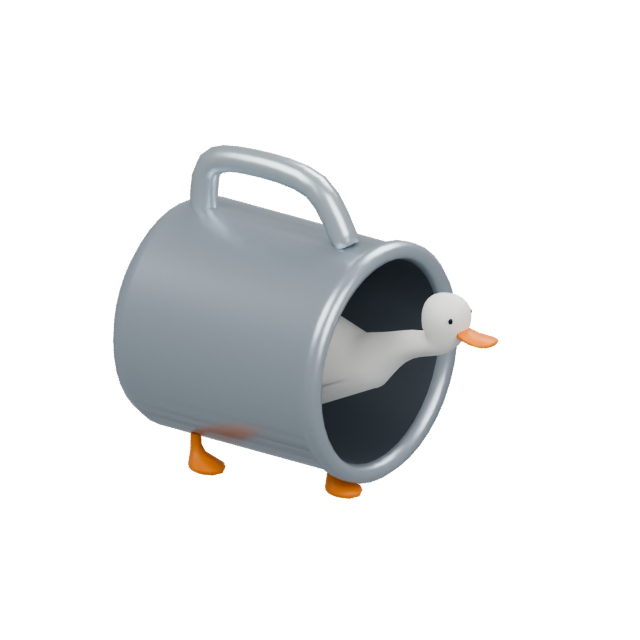
真实移动端 GLB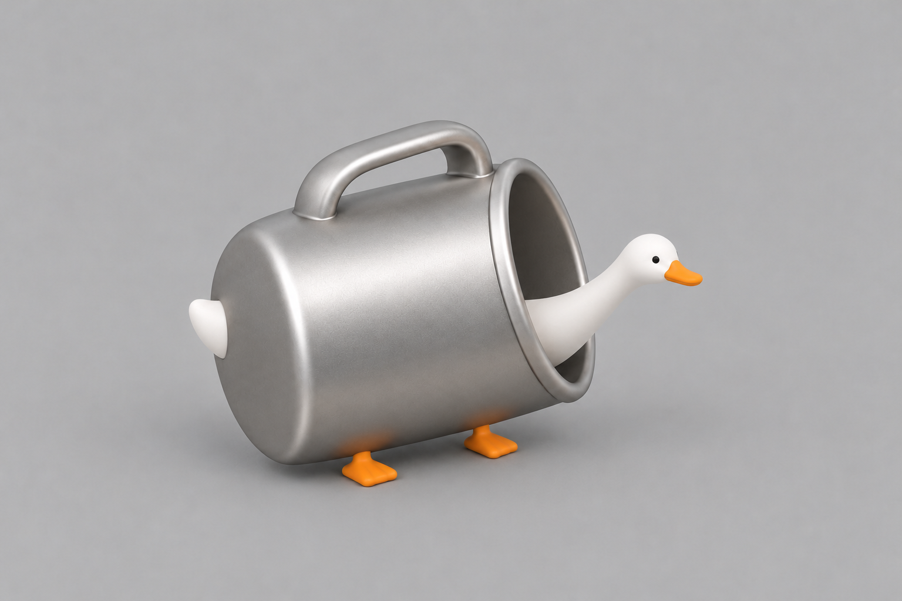
已确认的 B2 融合生图方向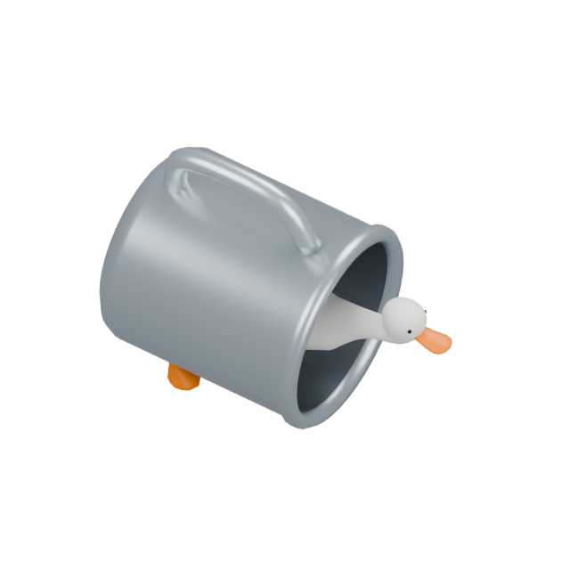
游戏俯视检查GLB · FBX · 可编辑 Blender · 贴图映射
积木鸭
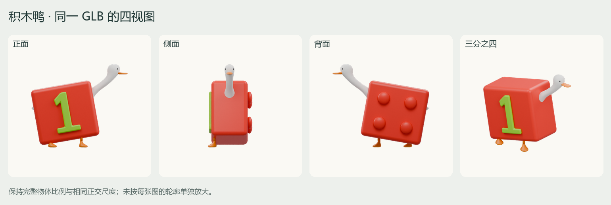
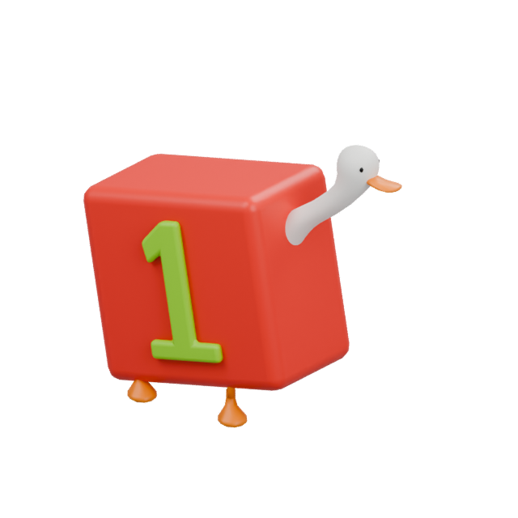
真实移动端 GLB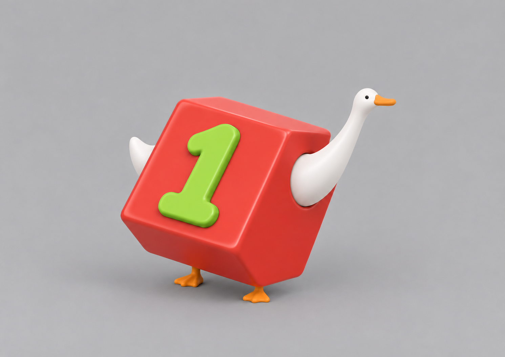
已确认的 B2 融合生图方向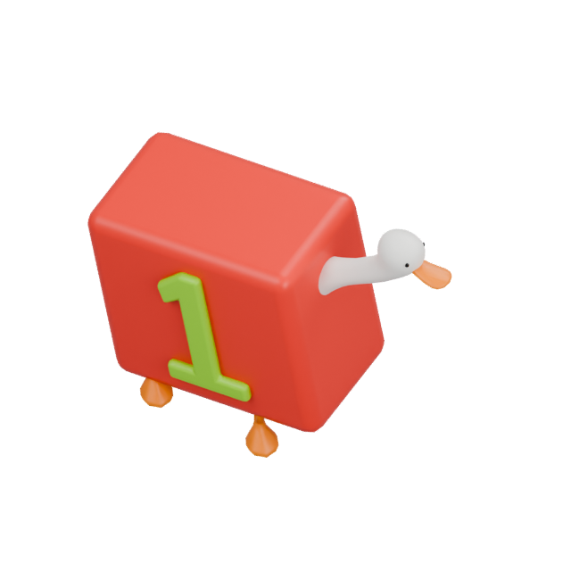
游戏俯视检查GLB · FBX · 可编辑 Blender · 贴图映射
预算与验证
| 模型 | 三角面 | GLB | 状态 |
|---|
| 蛋挞鸭 | 3,752 | 87.4 KiB | 单网格 / 材质 / primitive；256px 图集 |
| 钢杯鸭 | 3,940 | 93.8 KiB | 单网格 / 材质 / primitive；256px 图集 |
| 积木鸭 | 3,820 | 89.2 KiB | 单网格 / 材质 / primitive；256px 图集 |
三款均落在 2,000–4,000 三角面目标内。GLB 回读、居中与最大边检查、闭合性及 Khronos 零错误零警告检查通过；已生成离线凸包。独立 Unity 2022.3.62f3 QA 工程已验证材质、骨骼顶点变形、45 件 PhysX 混合密堆与自然休眠。独立 Windows QA Player 已使用真实游戏代码验证屏幕拾取、托盘、三消与重复进出；尚未发布到正式工程或进行微信真机验收。
Unity 导入检查
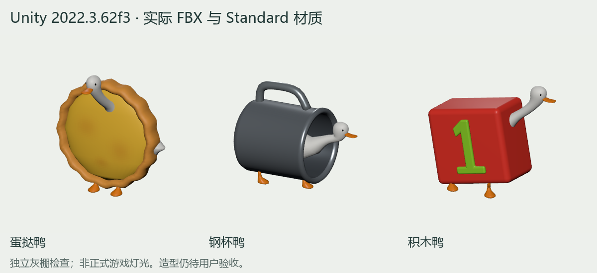
灰棚使用 Unity Standard 材质，非正式游戏灯光。三款 FBX 三角面与 GLB 一致；45/45 刚体在 15 秒内自然休眠，移除底部支撑后 44/44 再次稳定。母模三个动作都使实际蒙皮顶点运动并返回静止姿态。
Unity 检查记录 · 实际物理堆叠 · FBX 网格来源
实际游戏流程检查
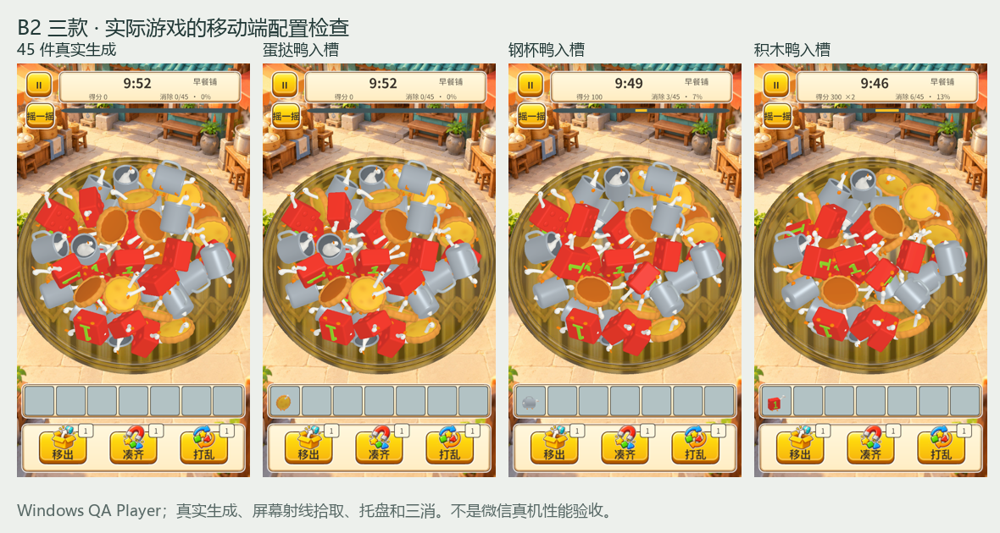
使用真实游戏代码的独立 Windows QA Player。桌面配置与移动端配置均生成 45 件鸭子，三款各经三次屏幕射线拾取完成三消，重复进出后重新生成。未强制显示埋藏物件，也未使用自动拾取绕过输入。退出时恢复测试前主题与关卡配置，故事成绩及挑战次数未改变。
新增的鸭子专用单通道材质保留金属/光滑度贴图，目前只在 QA 副本中使用。上述证据不代表微信真机性能通过，也不代表其余 17 款或五主题评审关已完成。
移动端配置检查 · 桌面配置检查 · 候选鸭子材质
简化与辨识检查
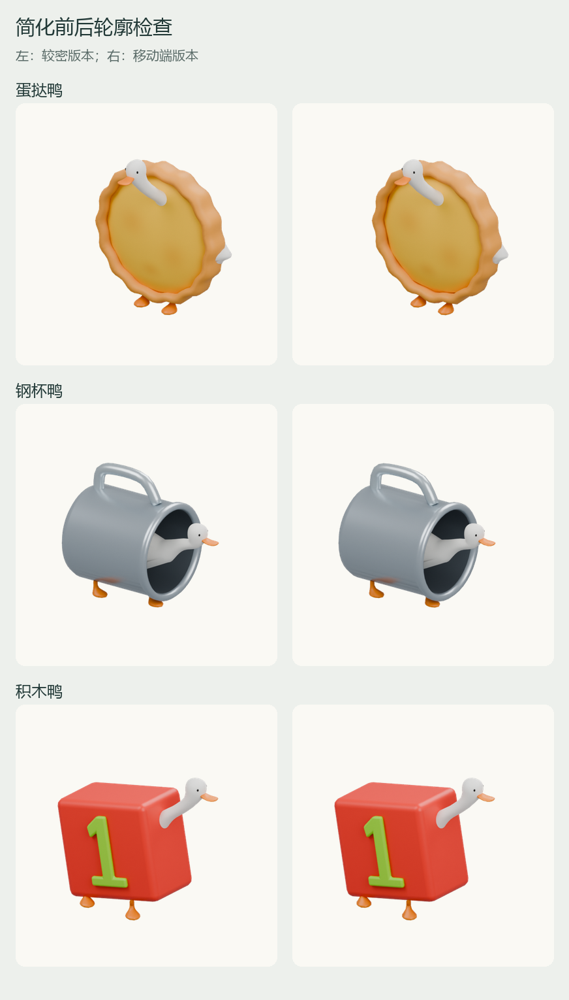
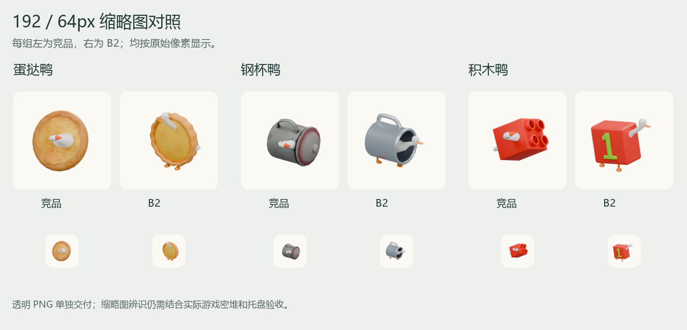
较密版本与移动端版本均由实际网格渲染；轮廓检查用于限制简化损失，不能替代造型验收。
简化轮廓记录 · 同尺寸条件检查 · Khronos 检查 · 模型与物件映射 · 交付说明
当前为前三款联合验收。尚未扩展其余 17 款或替换首页和正式主题；没有调用付费图生 3D。